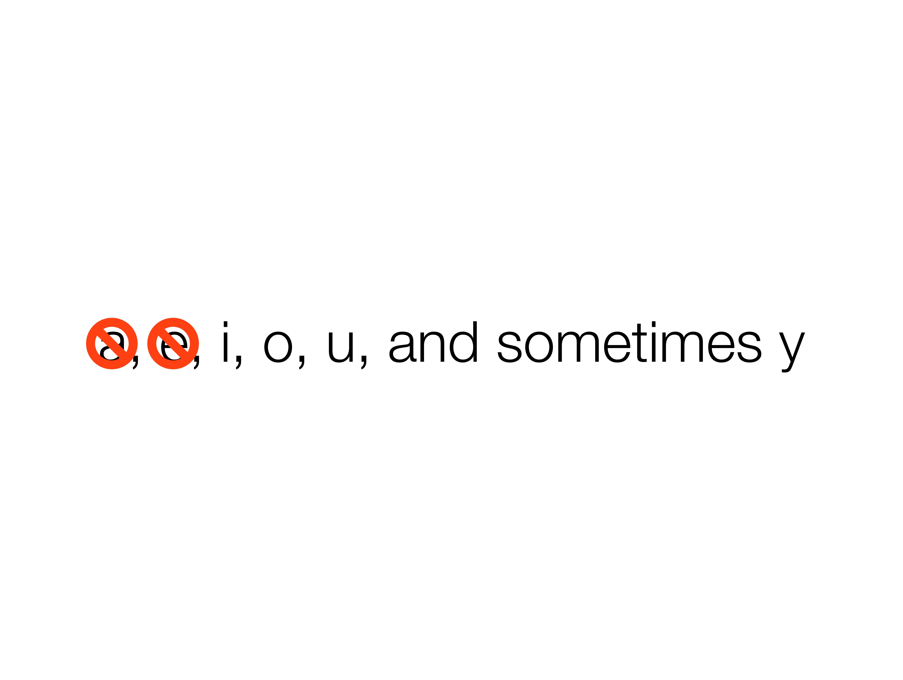
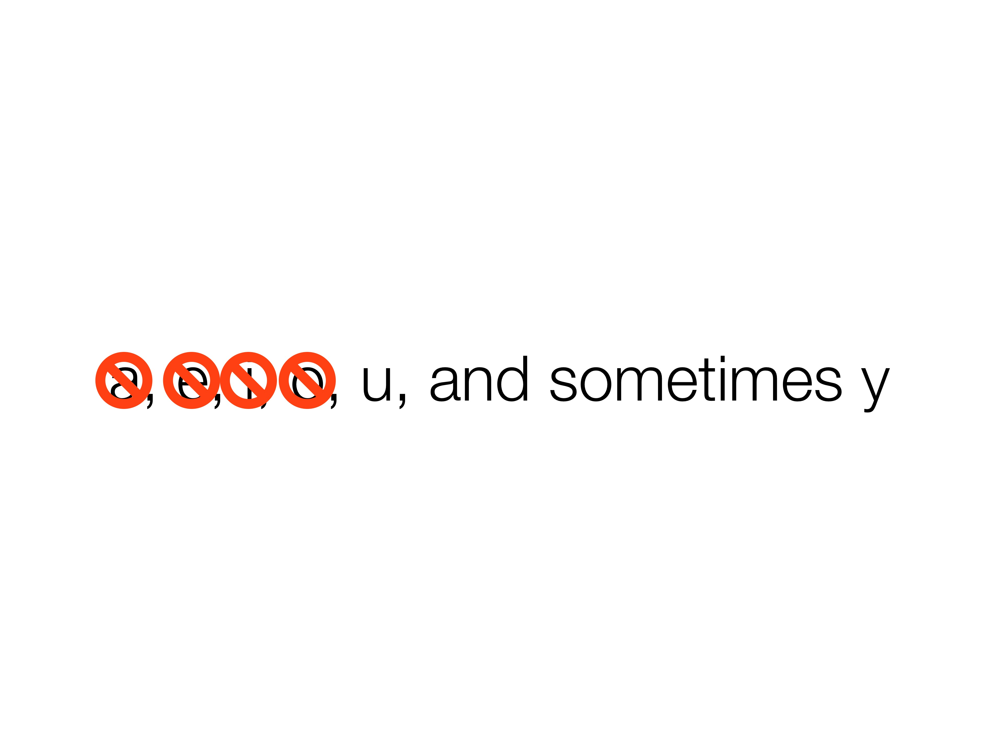
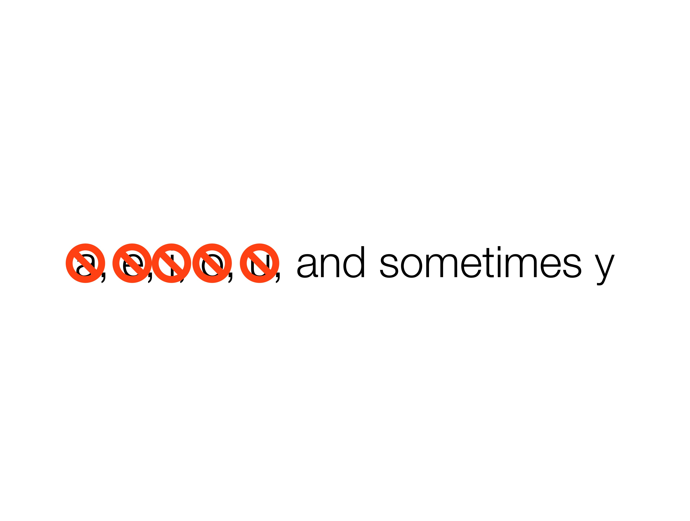
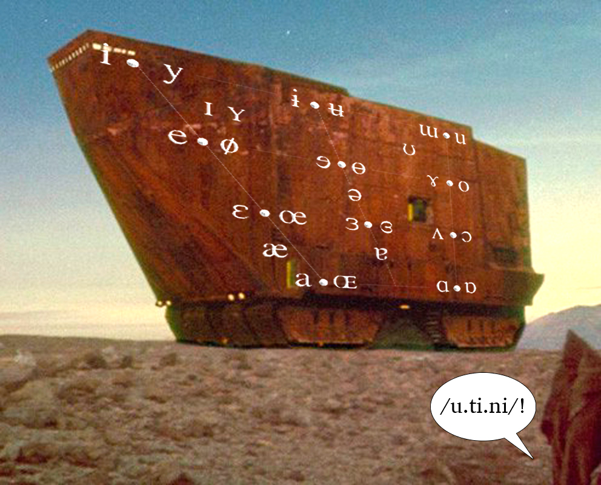

### Don't forget about the activity and quiz - Activity's on Canvas -> Discussions - Quiz is on Gradescope --- ### Your first 15-page paper on the history of computing is due Monday - (Remember, it's April Fools Day, everybody is lying to you) - Except me - Except then --- # Introduction to Speech ### Will Styler - LIGN 6 --- ### Today's Plan - How does speech work? - How can we write down speech? - How do we describe consonants? - How do we describe vowels? --- ### An Apology - Dearest LIGN 101 Students: This will be very familiar to many of you - Hopefully the review will help, or failing that, you'll be ready to help your classmates --- ## How does speech work? --- ### The Speech Process * Flapping bits of meat inside your head while blowing out air * This creates vibrations in the air you're expelling * The ear picks these up, and inteprets them as speech. * This process is studied in **Phonetics** --- ### The Lungs <img class="r-stretch" src="phonmedia/lungs.jpg"> --- ### Flapping bits of meat ("articulation") <img class="big" src="phonmedia/nasalsagittal.jpg"> --- ### Simplified a bit... <img class="r-stretch" src="phonmedia/sagittal_simple.jpg"> --- ### The Tongue <img class="r-stretch" src="phonmedia/tonguefromside.jpg"> --- <video class="r-stretch" controls src="video/mri_joynash.mp4"></video> --- ### Let's do an experiment --- > The North Wind and the Sun were disputing which was the stronger, when a traveler came along wrapped in a warm cloak. --- ### Speech is absolutely insane - It's a series of fluid and overlapping gestures - It's amazingly complex - ... and it's nothing like we think it is --- ### How do we wrap our heads around it? - First, we break speech into 'segments' or 'phones' - Then, we figure out how to describe those phones and their properties - This lets us *transcribe* what was said, rather than what words were said - But first you need to realize that... --- ## Your writing system is a trainwreck - <img class="r-stretch" src="humorimg/trainwreck.png"> --- ### Your writing system is lying to you - Every minute of every day - "They thoroughly and roughly wrought the boughs in the borough, through and through" - C doesn't exist - TH is neither a t nor an h, and represents two different sounds - ... and if you start thinking about letters, you're going to start struggling - For this class, consider your writing system with the same skepticism you would normally reserve for a guy with a broken bottle walking towards you in a dark alley. --- ### We have a problem - To work with speech, we need to understand what's being said - Both to generate it, and to record it - The Writing System Sucks so badly that it's almost useless for this task - We need a way to **transcribe** speech, rather than writing down the words being said --- ### Phonetic Alphabets - A system for *transcribing* the individual speech sounds that were made, rather than the words being produced - These can be language specific, or international - You throw away the writing system, and write down the *sequence of sounds* being produced --- ### The International Phonetic Alphabet - A system for transcription that's based on *describing* individual phones - The IPA should be able to transcribe speech in *any* human language or dialect --- ### The IPA allows us to 'transcribe' speech - "Black Lives Matter" - In Will's dialect: /blæk lajvz mæɾəɹ/ - Note the /z/, and the /ɾ/ tap, and the lack of "c" --- ### There are other phonetic alphabets used for Speech Recognition - Notably [ARPABET](https://en.wikipedia.org/wiki/ARPABET) - Designed to allow speech transcription of English without relying on IPA fonts and encoding - ARPABET uses two character combinations to encode the sounds of *English* - AAA R P AX B EH T / Y UW Z IH Z / T UW / K EH R IH K T ER ... - X-SAMPA is a similar idea, but full IPA - We're going to focus on the IPA here, because it's most useful for learning how speech works --- ### To understand transcription, you need to understand how sounds work - So... how do we describe how speech sounds are made? --- ### We break the world into two kinds of speech sounds - **Consonants:** Constrict, obstruct, or divert air in the vocal tract when being produced - **Vowels:** Shape the (unobstructed) vocal tract to change the sound emitted --- ## Describing Consonants --- ### Three steps to describing Consonants * We need to know three things: * **Place**: Where is the sound made? * **Manner**: What are we doing there? * **Voicing**: Are we making voicing? --- ## Place --- ### Place of Articulation - Where is the sound being made? --- ### Place <img class="r-stretch" src="phonmedia/sagittal_flesh.jpg"> --- ### Place <img class="r-stretch" src="phonmedia/sagittal_labeled.png"> --- ### Place * **Bilabial**: As in "***b***oy" * **Labiodental**: As in "***V***ote" * **Interdental**: As in "***Th***ose" * **Alveolar**: As in "***T***o***t***e***s***!" - Your alveolars may be *dental* * **Postalveolar**: As in "***J***u***dge***" - Your reading called these 'palatal' * **Velar**: As in "Ta***c***o***c***at" * **Glottal**: As in "Uh***-***oh!" - **Give me a word which...** --- ### There are other places English doesn't use - 'Uvular' sounds are made involving the uvula - As Cardi B says, 'that little dangly thang that swang in the back of my throat' - The French "r" sound in 'rouge' - 'Retroflex' sounds curl the tongue up and back - Present in Hindi/Urdu, as well as many other languages! --- ### Reference Diagrams for Place of Articulation --- ### Bilabial <img class="r-stretch" src="phonmedia/sag_bilabial.jpg"> --- ### Bilabial <video data-autoplay width="600" src="ipa/voiced_bilabial_stop.mp4"></video> --- ### Alveolar <img class="r-stretch" src="phonmedia/sag_alveolar.jpg"> --- ### Alveolar <video data-autoplay width="600" src="ipa/voiced_alveolar_stop.mp4"></video> --- ### Velar <img class="r-stretch" src="phonmedia/sag_velar.jpg"> --- ### Velar <video data-autoplay width="600" src="ipa/voiced_velar_stop.mp4"></video> --- ## Manner of Articulation --- ### Manner "So what are you doing with the articulators?" --- ### Manner * **Stops**: Stop the airflow (also called 'plosives') - As in '**c**a**t** **d**o**ck**e**t**' * ***Taps***: Throw your tongue against the roof of your mouth - As in 'la**t**er la**dd**er wi**nn**ers' * **Fricatives**: Constrict the airflow to make sounds - As in '**f**la**sh**y **s**o**v**iet **sh**i**f**ter**s**' * **Nasals**: Channel the air out the nose - As in 'wi**ng** **m**a**n** ' --- ### Oral Stop (/t/) <img class="r-stretch" src="phonmedia/sag_alveolar.jpg"> --- ### Oral Stop (/t/) <video data-autoplay width="600" src="ipa/voiced_bilabial_stop.mp4"></video> --- ### Nasal Stop (/n/) <img class="r-stretch" src="phonmedia/sag_nasal.jpg"> --- ### Nasal Stop (/n/) <video data-autoplay width="600" src="ipa/voiced_bilabial_nasal.mp4"></video> --- ### Manner (Continued) * **Approximants**: Bring the tongue *toward* the place - As in '**y**ou **w**ill' * **Laterals**: Channel air *around* the tongue - As in '**l**atera**l**s' --- ## Voicing --- ### Voicing * Is the larynx buzzing, or not? --- ### Let's pretend we're snakes eating bees! <img class="r-stretch" src="phonmedia/snakesbees.jpg"> --- ### Voiced vs. Voiceless - Cats - Bob - Month - Those - Crash - Judge --- ### Three steps to describing Consonants * We need to know three things: * **Place**: Where is the sound made? * **Manner**: What are we doing there? * **Voicing**: Are we making voicing? --- ### All consonants can be described this way - /m/ - Voiced Bilabial Nasal - /t/ - Voiceless Alveolar Stop - /g/ - Voiced Velar Stop - /f/ - Voiceless Labiodental Fricative --- ### There are a couple of weird ones - /ɹ/ - The English "R", a voiced 'alveolar' approximant - "Reed read the wrong resolution" - Super weird - /w/ - A voiced labio-velar approximant - "Will would wisely watch the wind" - Has a voiceless version ("Cool whip" from Family Guy) --- ### 'Affricates' If you combine a fricative and a stop, you get an affricate - **J**u**dg**e (dʒʌdʒ) - **Ch**eese (tʃiz) - Ca**ts** (kæts) --- ### So, that's consonants. --- ## Vowels! --- ### Vowels are created by shaping your vocal tract * A vowel is voicing passing through (and resonating in) an unobstructed vocal tract! * If we change the position of the tongue, we change the resonances --- <img class="r-stretch" src="phonmedia/voweltongue.png"> --- ### Vowels are different from consonants - They're always* voiced - They can (and do) occur on their own. I. - We describe vowels using different characteristics --- ### How many vowels are present in Mainstream US English? A) 5 B) 5, sometimes 6 C) 12 D) 17 E) 21 <section class="clicker"></section> --- ### How many vowels are present in Mainstream US English? A) 5 B) 5, sometimes 6 C) 12 D) <correct>17</correct> E) 21 --- ### Reminder, your writing system is as trustworthy as a politician turned used-car-salesman --- <img class="r-stretch" src="phonmedia/aeiou_seq_1.jpg"> --- <img class="r-stretch" src="phonmedia/aeiou_seq_2.jpg"> ---  --- <img class="r-stretch" src="phonmedia/aeiou_seq_4.jpg"> ---  ---  --- <img class="r-stretch" src="phonmedia/aeiou_seq_7.jpg"> --- <img class="r-stretch" src="phonmedia/aeiou_seq_8.jpg"> --- ### / i, ɪ, ɛ, æ, ə, əɹ, ʌ, ɑ, ɔ, ʊ, u / - beet - bit - bet - bat - sof**a** - bird - but - bot - bought - book - boot --- /i/ - beet, see, seen, sear, seal /ɪ/ - bit, sit, tin, sill /ɛ/ - bet, set, sent, fair, sell /æ/ - bat, sat, pant, pal /ʌ/ - but, sun, pun, lull (ə in sofa, amount) /əɹ/ - bird, purr, earl, butter, clamor (this is often broken into two vowels!) /ɑ/ - bot, saw, star, paul, pawn, (cot*) /ɔ/ - corn /kɔɹn/, boy /bɔj/ (caught*) /ʊ/ - book, hood, puss /u/ - boot, who’d, loose, lure, loon --- ### Describing Vowels - For vowels, we talk about three additional dimensions - 1- Where is the tongue in terms of height? - (High, Low, or Mid) - Also "Closed, Open, or Mid" - 2- Where is the tongue in terms of horizontal space? - (Front, Central, or Back) - 3- Are your lips rounded or not? ---  --- ### The IPA Vowel Chart <img class="r-stretch" src="phonmedia/ipa_english_vowels.jpg"> --- <img class="r-stretch" src="phonmedia/ipa_vowels_in_head.jpg"> --- <img class="r-stretch" src="phonmedia/ipa_vowels_with_tongue.jpg"> --- ### Diphthongs - Vowels where the tongue moves through the mouth - Start at one vowel, move to another vowel - Things like “boy” (/ɔj/), “buy” (/aj/), “bay” (/ej/), “boat” (/ow/), “cow” (/aw/) - Others are monophthongs --- ### MUSE Diphthongs /ɔj/ - boy, soy, toy, join, oil, Roy /aj/ - buy, right, try, sigh, die, fire /ej/ - play, bay, may, ray, lay, trail /ow/ - boat, oat, wrote, pope, toll /aw/ - how, now, brown, cow, prow, louse --- ### So, Mainstream US English has lots of vowels - 12 Monophthongs - / i, ɪ, ɛ, æ, ə, ɜ˞, ə˞, ʌ, ɑ, ɔ, ʊ, u / - 5 Diphthongs - /ɔj, aj, ej, ow, aw/ - And we describe these vowels in terms of high-to-low, front-to-back, and rounded or not. --- ### So, that's how we describe consonants and vowels - Now we understand that speech is different from writing - We need to be able to *transcribe* and *describe* speech in order to be able to manipulate and create it --- ### Wrapping it up - Speech is crazy complicated - The English writing system is a large lagoon of lies - We describe consonants by talking about place, manner, and voicing - The English writing system is a festival of falsehoods - We describe vowels by talking about height, front-back, and rounding - The English writing system is a dumpster of deception - Transcription, rather than writing systems, can help! --- ### Soon... - We'll talk a bit more about how we describe 'what sounds make up a word' - We'll talk about "segments" - We'll talk about Prosody --- <huge>Thank you!</huge>